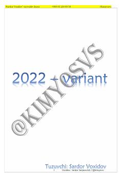

K22022-yil kimyo fanidan test savollari va masalalar to'plami.
Ushbu to'plam 2022-yilgi kimyo fanidan test savollarini o'z ichiga oladi. Unda turli xil kimyoviy reaksiyalar, moddalar xossalari va elektroliz jarayonlariga oid masalalar yechimlari bilan birga taqdim etilgan.